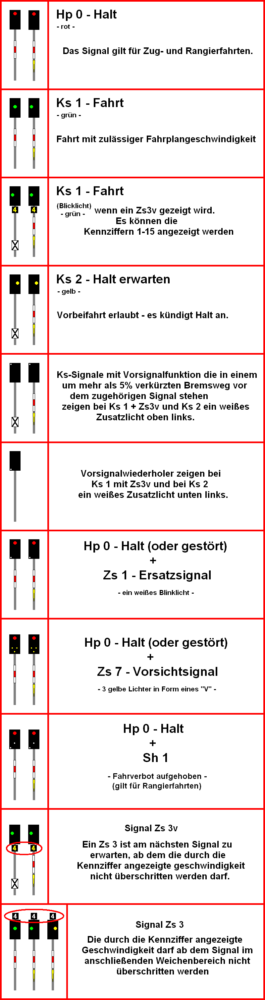

Signalbuch-Online
Diverse Ks-Signalbilder
Übersicht und Detaildarstellung aller Kombinationssignale (Ks-Signale) für den Bahnbetrieb.

Signalbuch-Online
Übersicht und Detaildarstellung aller Kombinationssignale (Ks-Signale) für den Bahnbetrieb.
